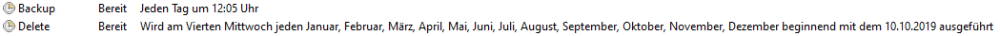

Ein paar Aufträge die ich im Basislehrjahr ausgeführt habe
Hardwaregrundlagen
Am Anfang vom Basislehrjahr habe wir das Thema Hardwaregrundlagen durchgenommen. Ein Auftrag war es, Batch-Files zu erstellen.
Webseite
Am Ende des bearbeiteten Themas Webtechnologie durften wir eine Webseite erstellen für das Unternehmen Muster AG. Bevor mit der Webseite angefangen werden durfte, brauchte es ein paar Vorbereitungen.
Eigenes Java Projekt
Wir durften selbst entscheiden, was für ein Java Projekt wir erstellen möchten, mir war schnell klar, dass es ein Wichtel Programm sein sollte. Dies haben wir nach einem halben Jahr im Basislehrjahr erstellen dürfen.
Netzwerktechnik
Wir hatten als Aufgabe mit PacketTracer ein VLAN zu erstellen, welches ich ziemlich am Anfang vom Basislehrjahr in Angriff genommen habe.
Wetterstation
Im Basislehrjahr ist eine meiner Projekt-Aufgaben eine Wetterstation in Betrieb zu nehmen, diese mit einer Datenbank zu verbinden und anschliessend die Daten auf eine Webseite hochzuladen. Zurzeit bearbeite ich dieses Projekt.
Die Aufträge im Detail
Hardwaregrundlagen
Für das Thema Hardware haben wir Batch Files erstellt. Ein Batch File hätte die Funktion gehabt, den Inhalt des Abfalls zu löschen. Dies habe ich mit dem unten ersichtlichen Befehl ausführen wollen, leider merkte ich später, dass es nicht ausgeführt wird, da es höhere Rechte braucht.
Ein weiteres Batchfile sollte dazu dienen, ein Backup von wichtigen Dateien zu erstellen. Es war uns freigestellt, wie wir dies lösen wollen. Mit Robocopy habe ich den Batch von meinen Ordnern „Desktop Dokumentationen“ und „Schule“ kopiert. Diese Ordner wurden dann in mein OneDrive gespeichert. Damit das Batchfile startete, ohne dass ich es immer manuell aktivieren musste, fügte ich es der Aufgabenplanung hinzu, wo immer um 12:05 Uhr automatisch ein Backup erstellt wird.

Ein weiteres erstelltes Batchfile war eine Art von Menu, mit dem ausgewählt werden kann, was ausgeführt werden soll. Die Ausführung erfolgt indem die Zahl des entsprechenden Namens eingegeben wird. Sobald die Entertaste gedrückt wird, sucht es den entsprechenden Namen und gleichzeitig, wo dieser Batch gefunden werden kann. Das Programm wird gestartet und das Programm schliesst sich.
Projektphase
Da bereits eine Aufgabe umgesetzt wurde, ordne ich dies der Realisierung zu.
Webseite
Da wir im Basislehrjahr Webtechnologien durchgenommen haben, war unsere Aufgabe eine eigene Webseite für die Firma Muster AG zu erstellen. Uns wurden ein paar Vorgaben abgegeben, die wir einzuhalten hatten. Bevor ich mit der Erstellung der Webseite beginnen durfte, musste ich eine Offerte mit drei Mockups schreiben. Die Offerte musste ich den Betreuern abgeben, damit ich weiter an der Webseite arbeiten dufte. Anschliessend musste ich mich für eines der drei Mockups entscheiden und ich wählte das Dritte aus, da es für mich am besten aussah. Beim Schreiben ging es am Anfang schnell, aber nach einer gewissen Zeit kam es auf die Details an und für die braucht man dann mehr Zeit. Am Schluss war ich zufrieden mit meinem Projekt, da es ähnlich aussah wie das Mockup, welches ich zuvor mit Adobe XD erstellt hatte.
Projektphase
Bei diesem Projekt war ich bereits bei der Realisierung, aber nicht komplett fertig, da gewisse Seiten, wie zum Beispiel das Kontaktformular, noch nicht fertig erstellt waren.
Mockup
Eigenes Java Projekt
Ein weiteres Projekt war mit Java ein Programm zu erstellen. Leider kannte ich Java noch nicht, deshalb war es für mich so schwierig, damit zu arbeiten. Ich wusste nicht, wie ich anfangen sollte, das Wichtel Programm zu erstellen. Mein Betreuer unterstützte mich und erklärte mir, wie ich es machen könnte. Zuerst musste ich wissen, was ich genau alles für Informationen brauche. Für das Wichtel Programm sollten mehrere Namen aufgeschrieben und per Zufallsprinzip den Personen zugeteilt werden. Am Ende konnte ich zwar Personen erstellen, hatte aber leider nicht mehr die Zeit, um ein Zufalls Prinzip zuzuordnen.
Projektphase
Bei diesem Projekt war ich mitten in der Realisierungs-Phase und bin am Ende mit dem Projekt nicht fertig geworden.
Netzwerktechnik
Im Programm PacktTracer mussten wird als erstes den hinzugefügten PC Ips vergeben. Es durften nur PC1 mit PC2 und PC3 mit PC4 miteinander kommunizieren. Damit nur je zwei dieser Computer miteinander kommunizieren konnten, musste i Switch angegeben werden, dass es ein VLAN ist und welche PC miteinander kommunizieren dürfen.
Projektphase
Bei dieser Phase war ich bereits bei der Einführung, da ich den Auftrag abgeschlossen hatte.
Wetterstation
Für die Wetterstation musste ich mich informieren, wie ich diese in Betrieb nehmen möchte. Zuerst baute ich die Wetterstation, die ich vom Basislehrjahr zur Verfügung gestellt bekam und in St. Gallen abgeholt hatte, im Garten auf. Zum Testen welches Betriebssystem ich auf meinen Raspberry Pi verwenden kann, installierte ich ein paar Betriebssysteme. Am Schluss habe ich ein fertiges Betriebssystem mit Homematic installiert, so dass ich die nächsten Schritte planen konnte.
Projektphase
Da ich mir im Moment überlege, wie genau vorgegangen werden sollte, bin ich in der Konzept Phase.
Projektarbeit 9 Klasse
In der 9. Klasse entwickelte ich als Abschluss Projekt ein Game. Ich wählte damals die Entwickler Plattform Unity aus, da es auch viele Tutorials dazu gab. Es sollte ein Horrorgame werden. Leider habe ich am Schluss nicht so viel erreicht, wie ich mir gewünscht hätte. Ich hatte Probleme mit programmieren und stiess immer wieder an Grenzen, da ich kein Vorwissen hatte und dann schnell nicht mehr weitergekommen bin, um meine Ideen umzusetzen. Dafür habe ich Unity von vielen Seiten kennengelernt und dessen neue Funktionen.
Projektarbeit 10 Klasse
Im 10. Schuljahr entwickelte ich ein weiteres Game. Durch mein erstes Abschluss Projekt war mir bereits bewusst, wieviel Arbeit dahintersteckt, deshalb habe ich das Projekt bereits früh umgesetzt. Immer besser verstand ich teilweise den Code und konnte ihn dadurch nach meinen Wünschen ändern. Dank meinen Erfahrungen vom Vorjahr, verlief das Game zu entwickeln viel schneller. Ausserdem habe ich mich auch mit dem Modellieren von Objekten auseinandergesetzt, obwohl dies nicht so gut funktionierte.
Video Projekt 9 Klasse
Video Projekt 10 Klasse
Was ich durch die beiden Projektarbeiten gelernt habe
Durch diese Projekte habe ich Unity kennengelernt und konnte neue Funktionen verwenden, ausserdem habe ich dadurch das Programmieren entdeckt. Ein Game zu entwickeln bietet so viele Möglichkeiten, wenn man erst verstanden hat wie es funktioniert, aber es beansprucht so viel Zeit.